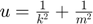

Direct integration with quadrature
This script calculates the mean and variance of  by direct integration
Contents
Define the set of simulation parameters
% Initiate SimParamSet Q=SimParamSet(); % Add parameters k and m to the set Q.add(SimParameter('k', LogNormalDistribution(5,1))); Q.add(SimParameter('m', UniformDistribution(1,2)));
Get integration rule directly
% Integration points and weights with full tensor grid % Tensor product from 3 point 1D rule for K and 5 point rule for M [x, w]= Q.get_integration_points(5, 'grid', 'full_tensor'); k = x(1,:); m = x(2,:);
Calculate statistics of the solution
% number of integration points Q=length(w); % Initialize memory for solution vector u = zeros(1,length(w)); % Compute solution at the integration points for j = 1:Q k_j =k(j); m_j =m(j); u(j) = 1/k_j^2+1/m_j^2; end % Compute mean and variance u_mean = u * w u_var = binfun(@minus, u, u_mean).^2 * w
u_mean =
0.5003
u_var =
0.0417